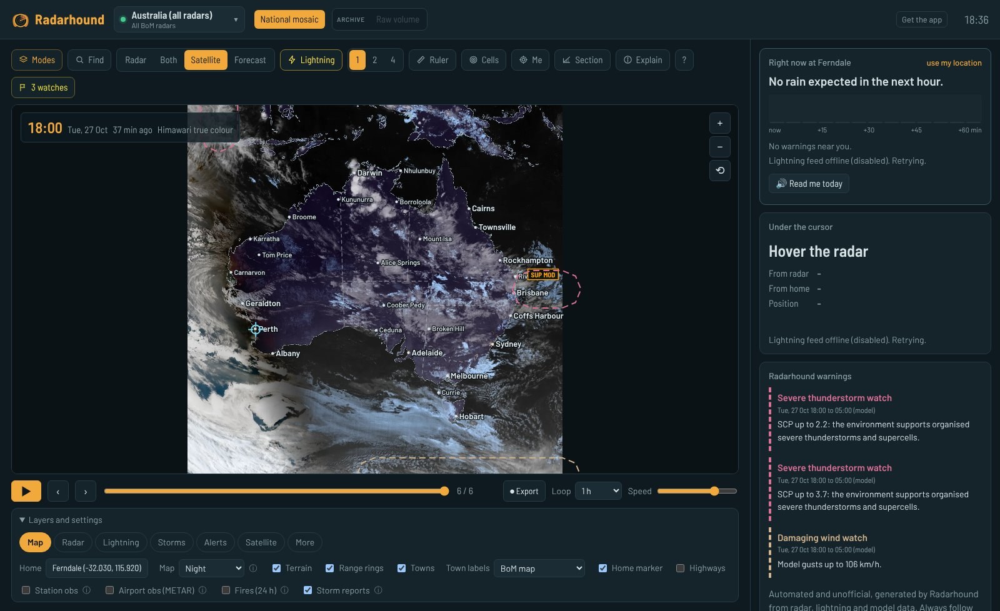
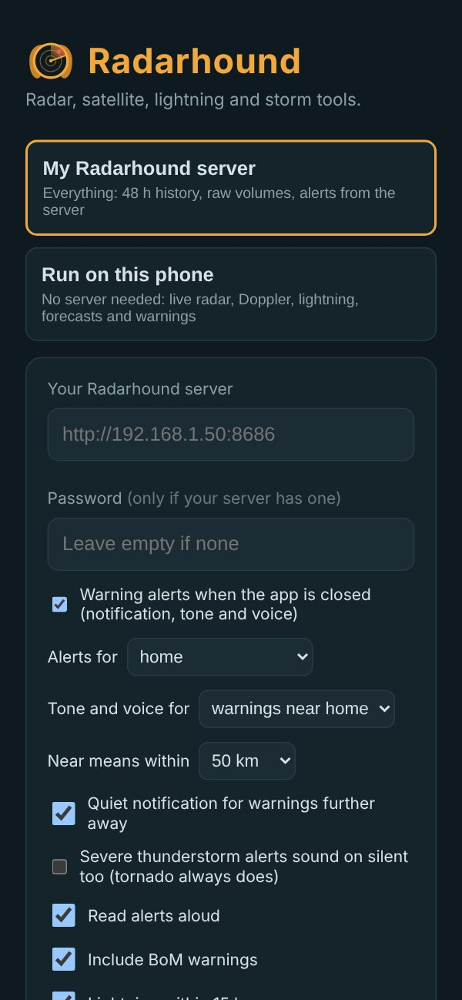
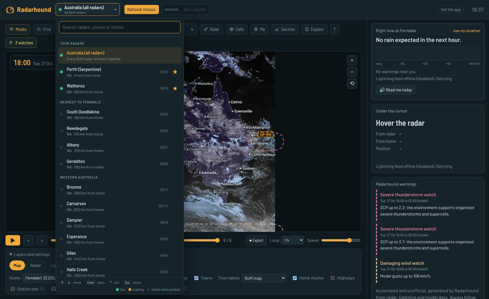

Storm-chaser radar for Australia,
on your own server.
Live BoM radar and Doppler, every radar stitched into one map, raw dual-pol volumes, Himawari satellite, live lightning, Windy-style forecast maps, storm tracking, supercell and tornado tools, and its own NWS-style warnings read out loud. Free data, no API keys, one Docker container, plus an Android app.

The national view with Himawari infrared, the rain-in-the-next-hour card and storm threat ratings.
Nerdy underneath, friendly on top
Pick Simple, Storm chaser or Pro. Simple answers "is it going to rain on me?"; Pro gives you raw volumes and cross-sections.
Every BoM radar, one map
64 to 512 km loops, Doppler wind and rainfall, a seamless all-Australia mosaic, 48 hours of history, up to four synced panes.
Dual-pol, every tilt
Dealiased and storm-relative velocity, ZDR, CC, KDP, hydrometeor class, cross-sections, echo tops, VIL, MESH hail size.
Supercell and tornado tools
Storm cells with arrival times, live Doppler couplets, mesocyclone and debris detection, SCP / STP / helicity overlays, threat ratings with reasons.
NWS-style, spoken
Radarhound's own tornado, severe thunderstorm and flash flood polygons and model watches, plus BoM's warnings, with a tone and voice: "Severe thunderstorm warning issued for…"
Himawari, decoded
Raw infrared with real cloud-top temperatures, water vapour, GeoColor, day cloud phase, night microphysics, dust and air mass.
Live strikes and thunder rings
Community lightning with rings that travel at the speed of sound, strike density and "lightning within 15 km" alerts.
Windy-style maps
30+ layers with wind particles, CAPE, shear, upper air, sea and air quality, model comparison and skew-T soundings.
Rain in the next hour
A radar nowcast in plain words with minute bars, BoM-style rain ranges for the week, and a spoken morning summary.
Search everything
Ctrl+K for layers, radars, modes and places, an Explain button for every product, share links, favourites and a kiosk view.
Your server, or just your phone
The Android app does both. Switch any time.
The full build
Run Radarhound in Docker on a home PC or server; the app and any browser connect to it.
- 48-hour history and raw volumes
- Raw Himawari bands
- Alerts from the server, even with the app closed
- Works away from home with Tailscale
No server at all
The same Radarhound page runs inside the app and fetches its own data.
- Live radar, Doppler and the national mosaic
- Radarhound's warnings, storm cells and nowcast
- Lightning, forecasts, satellite
- BoM and lightning alerts with the app closed

Install
- Install Docker (Docker Desktop on Windows or macOS).
- Get Radarhound and start it:
git clone https://github.com/ReverendOzmund/radarhound.git cd radarhound docker compose up -d --build
- Open
http://localhost:8686. The welcome tour asks how much detail you want and where home is. Set your local radars and state warnings feed indocker-compose.yml(see the README). - Phone: open
http://<your-server>:8686/appon Android, or grab the APK from Releases and choose "Run on this phone".

Ctrl+K: one search box for modes, layers, radars, settings and places.
Data and fine print
Unofficial. Radarhound's own warnings, watches and storm ratings come from a hobby algorithm and can be wrong, late or missing. Always follow the Bureau of Meteorology and emergency services.
Radarhound ships no weather data. Your own server or phone fetches it for your personal use from:
| Source | Used for |
|---|---|
| Bureau of Meteorology | Radar, warnings, observations, radar archive. Personal use; don't serve it to others. |
| Blitzortung.org / LightningMaps | Lightning. Private, non-commercial use. |
| Open-Meteo | Forecasts and forecast maps. Non-commercial free tier, CC BY 4.0. |
| NOAA, NASA GIBS and FIRMS, CIRA SLIDER | Satellite and fire hotspots. |
| Aviation Weather Center, University of Wyoming, OpenStreetMap, GeoNames, Natural Earth | Airport reports, soundings, address search, towns, borders. |
Full list and terms: NOTICE.md. Screenshots show NOAA Himawari and NASA imagery.